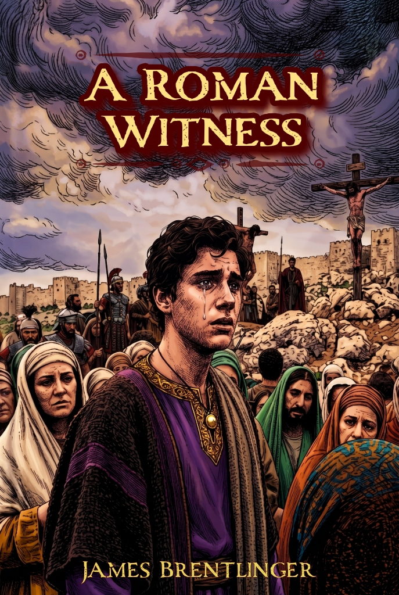
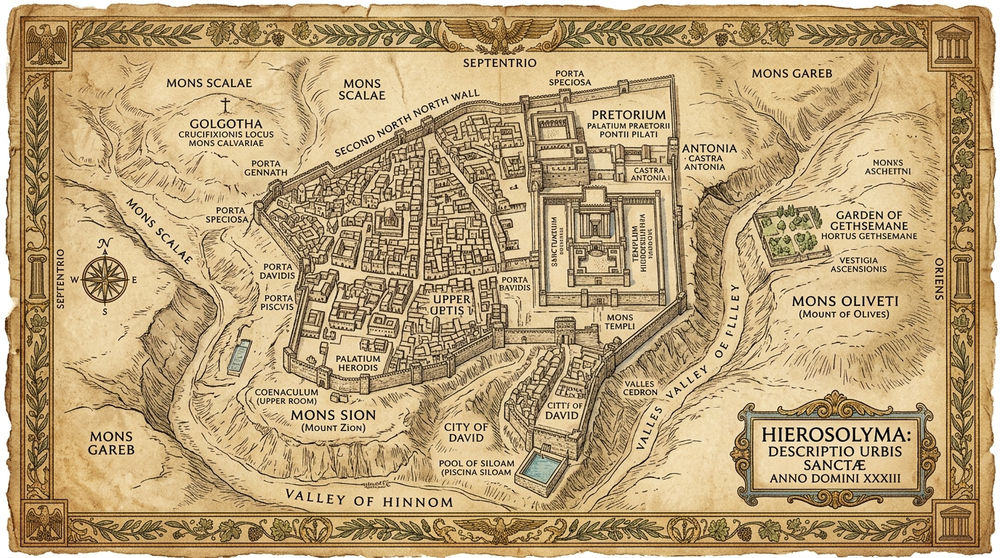

“The marble would crumble. The eagles would fall. But the broken bread would conquer the world.”
Sent to Judea to audit Pontius Pilate's corruption, nineteen-year-old Roman patrician Marcus Aurelius Severus expects a land of thieves and fanatics. Instead, he meets Jesus of Nazareth. From the dust of Caesarea to the darkness over Golgotha and the hurled stone of the empty tomb, follow a Roman aristocrat who surrenders the purple to follow the King of Kings.

First Edition • Copyright © 2026
Professionally Typeset by Reedsy
Explore the epic landmarks from A Roman Witness. Select any hotspot on the antique map to view historical lore, critical scenes from the novel, characters present, and direct excerpts.

Click any of the bronze markers on the ancient Jerusalem map to read historical lore and scenes from the novel.
From the marble curule chairs of the Roman nobility to the humble nets of the Galilean fishermen, explore the lives caught in the turning point of world history.
Browse all twenty chapters of A Roman Witness. Read synopses, historical themes, and verbatim excerpt passages directly from the text.
Trace Marcus Aurelius Severus's transformative journey through the momentous week of the crucifixion and resurrection.
Explore the legal codes, physical artifacts, and provincial institutions woven throughout the pages of the novel.
The heavy gold signet ring carved with a snarling wild boar and cabochon garnet eyes. For nineteen years the mark of Marcus's imperial privilege; cast into the dirt in the root cellar, restored by Mary as an instrument of divine justice, and finally dropped into the cistern sludge to reject Caesar's pardon.
The square linen face-cloth found folded separately in the empty tomb, bearing a faint scorched sepia impression of Christ's face. Kept by Marcus against his fractured ribs, it radiated warmth in the icy waters of Hezekiah's conduit and unlocked the barred door of the apostles.
Shared in Simon the Tanner's cellar by Peter, Marcus, and Titus. A sacred declaration that in the Kingdom of God, there is no Greek, no Jew, no slave, and no senator. The living symbol that outlasts the eagles and conquers the world.